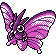

#049
Venomoth
BugPoison
Abilities: Tinted Lens, Compound Eyes, Wonder Skin
Base stats BST 450
HP70
Attack55
Defense60
Speed90
Sp. Atk100
Sp. Def75
Evolution
None detected.
Level-up learnset
LevelMoveType
Lv. 1Gust
Lv. 1Struggle BugBug
Lv. 1DisableNormal
Lv. 1TackleNormal
Lv. 1ForesightNormal
Lv. 1WhirlwindNormal
Lv. 1Air Slash
Lv. 7SupersonicNormal
Lv. 10Bug BiteBug
Lv. 13ConfusionPsychic
Lv. 15Sleep PowderGrass
Lv. 15Stun SporeGrass
Lv. 15PoisonpowderPoison
Lv. 17PsybeamPsychic
Lv. 21Poison FangPoison
Lv. 24Leech LifeBug
Lv. 25Mega DrainGrass
Lv. 27Zen HeadbuttPsychic
Lv. 31Gust
Lv. 34Baton PassNormal
Lv. 38Psychic—
Lv. 42Morning SunNormal
Lv. 46Bug BuzzBug